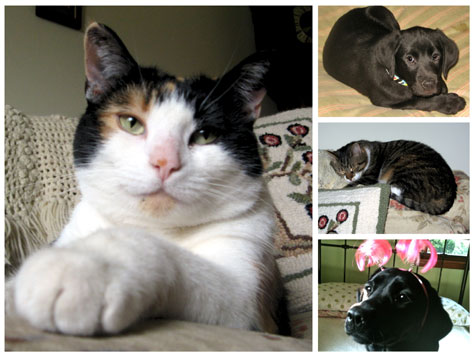

October 2012

Zelda Louise Forthysia (Left): Zelda is indeed the pampered pet. She was originally from the streets of Virginia but we adopted her in 2004. She is also known as The Princess of Darkness because of her tendency to throw herself onto Noah and tackle him. She likes to be petted but watch out, she may bite! Sirius Black (Top right): Sirius was named after the godfather in the popular series, Harry Potter. He likes to go for long walks, spending time with his best friend, Bea and watching TV. He can get quite nervous at times but he can also be extremely goofy as well. He loves the mountains and is never to busy for a hug. Noah Stanley Shumaker (Middle right): Noah is the "Mr. Rogers" of cats. He is the peacekeeper in our house but can get quite grumpy at times. We adopted him from the Humane Society in 2003 and his favorite thing to do is to sit out in the breezeway and nap. Beatrice Lenore Honeysuckle Zazzles Shumaker (Bottom Right): Bea is the happiest of labs but she can also be a little pushy. She loves everybody (Sirius the most). She also had the habit of looking at us skeptically making us thing she's plotting against us. She is 2 years old and enjoys licking everyone. |